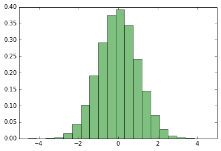
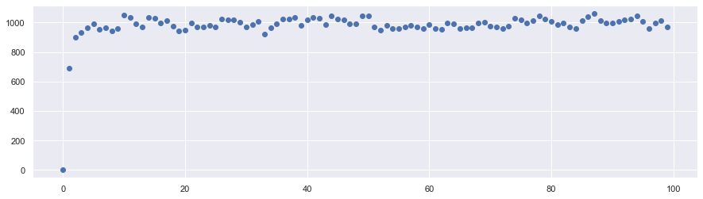

Harmonic Oscillator using HMC
Import the Library
'''import section''' import numpy as np import matplotlib.pyplot as plt import math as math import random as random import seaborn as sns sns.set()
We want to apply HMC to collection of 100 independent Harmonic Oscillator to get equilibrium configuration.
Hamiltonian
Hamiltonian of Harmonic Oscillator in 1D is:
\( H = \frac{1}{2} p^{2} + \frac{1}{2}q^{2}\) with \( m = 1,k = 1\)
This function calculates the total Hamiltonian of the configuration
def hamiltonian(x,p,np): '''x,p: x and p are list of position and momentum''' '''np : number of particles in the system ''' H = 0.0 for k in range(np): H = H + ((x[k]*x[k])/2.0 + (p[k]*p[k])/2.0 ) return H
Generating Random Momentum
In order to generate random momentum we use "random.gauss"
def drawp(np): '''this function returns a list of random numbers''' t = [0.0 for k in range(np)] for k in range(np): r = random.gauss(0.0,1.0) t[k] = r return(t)
One can check whether the generated numbers are normally distributed or not by doing:
N = 100000 p = [0.0 for k in range(N)] p = drawp(N) num_bins = 100 plt.figure(figsize = [10,6]) plt.hist(p,num_bins, density= 1.0, facecolor='green', alpha = 0.5) plt.show()

Leap Frog
We will use leap frog approximation to evolve the system according to time.
def leap_frog(N,dt,ix,ip,np): ''' N : number of steps to evolve dt: fraction of time ie T = dt*N ix,ip : initial position and momentum np : number of the particles in the system ''' ''' Returns x,p : final position and momentum''' x = ix p = ip k = 0 while k < N: if k == 0: for i in range(np): p[i] = p[i] - ((dt/2.0)*x[i]) elif k > 0 : if k < N - 1: for i in range(np): x[i] = x[i] + (dt*p[i]) p[i] = p[i] - (dt*x[i]) #S1 = hamiltonian(x,p,np) #print "k =",k,"S1=",S1 elif k == N - 1: for i in range(np): p[i] = (p[i] - (dt/2.0)*x[i]) k = k+1 return x,p
HMC
Here we run the HMC - simulation
def HMC(np,N,dt,steps,x0): ''' np : number of particles in the system N = number of steps in Leap - Frog dt = fraction of time in Leap - Frog steps: total steps in HMC ''' xt = [0.0 for k in range(np)] pt = [0.0 for k in range(np)] p0 = drawp(np) H = [0.0 for k in range(steps)] S0 = hamiltonian(x0,p0,np) #print ("=======>", 0,"S0=", S0) chain = 1 total_frac = 0.0 while chain < steps: s_stor = [0.0] xt,pt = leap_frog(N,dt,x0,p0,np) S1 = hamiltonian(xt,pt,np) frac = math.exp(-(S1-S0)) #print frac a = min(1,frac) b = random.uniform(0.0,1.0) if b < a: #print("=======>", chain, "S1=",S1,frac,a,b) H[chain] = S1 x0 = xt p0 = drawp(np) S0 = hamiltonian(x0,p0,np) else: H[chain] = S0 p0 = drawp(np) chain = chain+1 return H
Seting Constants
np = 1000 N = 1000 dt = 0.001 steps = 100
Call HMC
x0 = [1.0 for k in range(np)] x0 = [random.uniform(0.0,1.0) for k in range(np)] H = HMC(np,N,dt,steps,x0)
Plot
t = [1.0*k for k in range (steps)] plt.figure(figsize = [15,4]) plt.scatter(t,H) plt.show()
